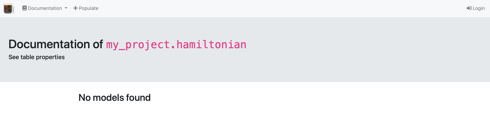
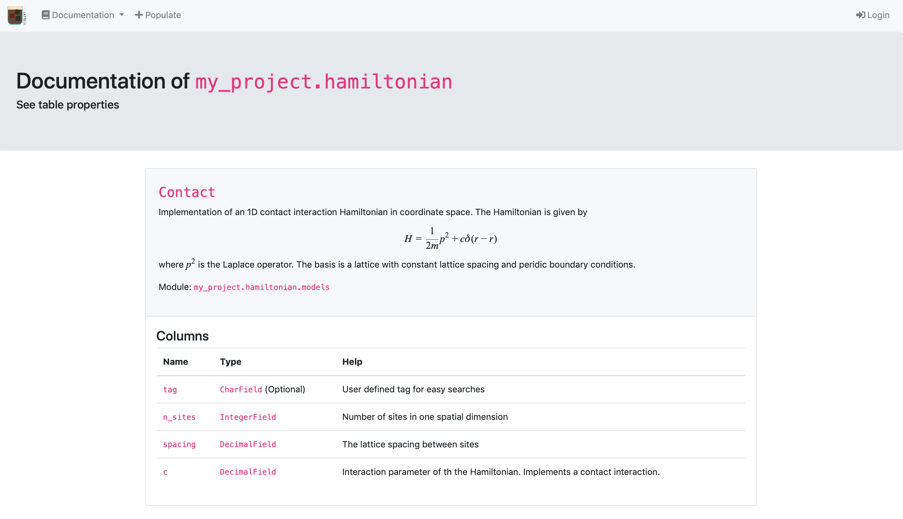

Create the hamiltonians app¶
Creating the infrastructure¶
For now your project is basically empty. To implement new tables, you have to create apps – which you can view as python sub modules of your project.
To do so, you have to run
$ python manage.py startapp hamiltonian
App `hamiltonian` was successfully created. In order to install it
1. Adjust the app (directory `/path/to/project/my_project/my_project/hamiltonian`)
2. Add `my_project.hamiltonian` to the `PROJECT_APPS` in `settings.yaml`
3. Run `python manage.py makemigrations`
4. Run `python manage.py migrate`
This will create the folder structure for the my_project.hamiltonian submodule.
To let django know that you want to include this app in your project, modify settings.yaml to
SECRET_KEY: "{sup3r-secr3t-p4ssw0rd}"
PROJECT_APPS:
- my_project.hamiltonian
ALLOWED_HOSTS: []
DEBUG: True
Because you have not added new tables yet, there is nothing to migrate. The web view however will now have a new tab http://127.0.0.1:8000/documentation/hamiltonian/ which will find the new app with no tables. 
Creating tables¶
Tables are implemented in the models.py file within each app.
To implement your first table adjust the my_project/hamiltonian/models.py to
"""Models of hamiltonian
"""
# Note: if you want your models to use espressodb features, they must inherit from Base
from django.db import models
from espressodb.base.models import Base
class Contact(Base):
r"""Implementation of an 1D contact interaction Hamiltonian in coordinate space.
The Hamiltonian is given by
$$
H = \frac{1}{2 m} p^2 + c \delta(r - r)
$$
where \( p^2 \) is the Laplace operator.
The basis is a lattice with constant lattice spacing and peridic boundary conditions.
"""
n_sites = models.IntegerField(
verbose_name="Number of sites",
help_text="Number of sites in one spatial dimension",
)
spacing = models.DecimalField(
verbose_name="lattice spacing",
max_digits=5,
decimal_places=3,
help_text="The lattice spacing between sites",
)
c = models.DecimalField(
verbose_name="Interaction",
max_digits=5,
decimal_places=3,
help_text="Interaction parameter of th the Hamiltonian."
" Implements a contact interaction.",
)
class Meta:
unique_together = ["n_sites", "spacing", "c"]
The inheritance of EspressoDB’s Base class
class Contact(Base):
allows to utilize EspressoDB’s features like the population view or auto documentation. Each class will correspond to a table in your database.
Each class attribute which is associated with a models.Field will be a column of the table.
By default Base adds the following columns user, tag, type, last_modified.
The user is set whenever EspressoDB identifies a logged in user (e.g., from your database connection file), the tag field is a string you can use for searching the database.
The type is automatically set by EspressoDB to the actual name of the class.
E.g., each Contact table entry will have the type="Contact".
This will become relevant for inheritance later on.
The last_modified field is updated to the current time whenever a table row is changed (or saved for that matter).
For this specific class, you add the following three columns n_sites, spacing, and c.
We have used DecimalFields instead of FloatFields because this allows to use the equal expression to check numbers.
Particularly, the last two lines
class Meta:
unique_together = ["n_sites", "spacing", "c"]
tell the table that no matter what, it does not allow to insert an entry in the database if ther already is an entry with the same exact n_sites, spacing, and c.
Furthermore, the doc string of the class and the the help text of the fields are used to generate the auto documentation.
To migrate the new tables in the database, you have to run
$ python manage.py makemigrations
Migrations for 'hamiltonian':
my_project/hamiltonian/migrations/0001_initial.py
- Create model Contact
which creates the migrations file my_project/hamiltonian/migrations/0001_initial.py.
This file summarizes the strategy how to update the database.
Next, to actually insert the empty table, you have to run
$ python manage.py migrate
Operations to perform:
Apply all migrations: admin, auth, contenttypes, hamiltonian, notifications, sessions
Running migrations:
Applying hamiltonian.0001_initial... OK
Now you have implemented the tables.
This change is reflected in your documentation view documentation view: 
The webpage uses katex to render the latex expressions.
You can use $$ for equations and \( for inline math.